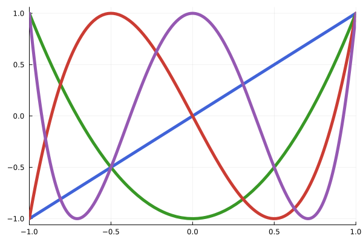

Reference/API
All polynomials have the following functionality. In some cases, there is not a direct function call and therefore the polynomials have to be converted to the standard Polynomial type before continuing.
Base.chopBase.eachindexBase.firstindexBase.gcdBase.isrealBase.iszeroBase.keysBase.lastindexBase.lengthBase.mapBase.oneBase.pairsBase.realBase.sizeBase.truncateBase.valuesBase.zeroPolynomials.basisPolynomials.chop!Polynomials.coeffsPolynomials.companionPolynomials.constanttermPolynomials.degreePolynomials.derivativePolynomials.domainPolynomials.fitPolynomials.fromrootsPolynomials.hasnanPolynomials.integratePolynomials.isconstantPolynomials.isintegralPolynomials.ismonicPolynomials.mapdomainPolynomials.rootsPolynomials.truncate!Polynomials.vanderPolynomials.variable
Arithmetic
All AbstractPolynomials have basic arithmetic operations defined on them (+, -, *, /, ÷, %, ==).
julia> p = Polynomial([1, 2])
Polynomial(1 + 2*x)
julia> q = Polynomial([1, 0, -1])
Polynomial(1 - x^2)
julia> 2p
Polynomial(2 + 4*x)
julia> 2 + p
Polynomial(3 + 2*x)
julia> p - q
Polynomial(2*x + x^2)
julia> p * q
Polynomial(1 + 2*x - x^2 - 2*x^3)
julia> q / 2
Polynomial(0.5 - 0.5*x^2)Inspection
Polynomials.degree — Functiondegree(::AbstractPolynomial)Return the degree of the polynomial, i.e. the highest exponent in the polynomial that has a nonzero coefficient.
For standard basis polynomials the degree of the zero polynomial is defined to be $-1$. For Laurent type polynomials, this is 0, or lastindex(p). The firstindex method gives the smallest power of the indeterminate for the polynomial. The default method assumes the basis polynomials, βₖ, have degree k.
Base.length — Functionlength(::AbstractPolynomial)The length of the polynomial.
Base.size — Functionsize(::AbstractPolynomial, [i])Returns the size of the polynomials coefficients, along axis i if provided.
Polynomials.domain — FunctionPolynomials.domain(::Type{<:AbstractPolynomial})Returns the domain of the polynomial.
Polynomials.mapdomain — Functionmapdomain(::Type{<:AbstractPolynomial}, x::AbstractArray)
mapdomain(::AbstractPolynomial, x::AbstractArray)Given values of x that are assumed to be unbounded (-∞, ∞), return values rescaled to the domain of the given polynomial.
Examples
julia> x = -10:10
-10:10
julia> extrema(mapdomain(ChebyshevT, x))
(-1.0, 1.0)
Base.chop — Functionchop(::AbstractPolynomial{T};
rtol::Real = Base.rtoldefault(real(T)), atol::Real = 0))Removes any leading coefficients that are approximately 0 (using rtol and atol with norm(p)). Returns a polynomial whose degree will guaranteed to be equal to or less than the given polynomial's.
Polynomials.chop! — Functionchop!(::AbstractPolynomial{T};
rtol::Real = Base.rtoldefault(real(T)), atol::Real = 0))In-place version of chop
Base.truncate — Functiontruncate(::AbstractPolynomial{T};
rtol::Real = Base.rtoldefault(real(T)), atol::Real = 0)Rounds off coefficients close to zero, as determined by rtol and atol, and then chops any leading zeros. Returns a new polynomial.
Polynomials.truncate! — Functiontruncate!(::AbstractPolynomial{T};
rtol::Real = Base.rtoldefault(real(T)), atol::Real = 0)In-place version of truncate
Base.iszero — Functioniszero(p::AbstractPolynomial)Is this a $0$ polynomial.
For most types, the $0$ polynomial is one with no coefficients (coefficient vector T[]), though some types have the possibility of trailing zeros. The degree of a zero polynomial is conventionally $-1$, though this is not the convention for Laurent polynomials.
Polynomials.isconstant — Functionisconstant(::AbstractPolynomial)Is the polynomial p a constant.
Polynomials.constantterm — Functionconstantterm(p::AbstractPolynomial)return p(0), the constant term in the standard basis
Base.isreal — Functionisreal(p::AbstractPolynomial)Determine whether a polynomial is a real polynomial, i.e., having only real numbers as coefficients.
See also: real
Base.real — Functionreal(p::AbstractPolynomial)Construct a real polynomial from the real parts of the coefficients of p.
See also: isreal
This could cause losing terms in p. This method is usually called on polynomials like p = Polynomial([1, 2 + 0im, 3.0, 4.0 + 0.0im]) where you want to chop the imaginary parts of the coefficients of p.
Polynomials.isintegral — Functionisintegral(p::AbstractPolynomial)Determine whether a polynomial is an integer polynomial, i.e., having only integers as coefficients.
Polynomials.ismonic — Functionismonic(p::AbstractPolynomial)Determine whether a polynomial is a monic polynomial, i.e., its leading coefficient is one.
Polynomials.hasnan — Functionhasnan(p::AbstractPolynomial) are any coefficients NaN
Iteration
For the Polynomial type, a natural mapping between the polynomial $a_0 + a_1 x + a_2 x^2 + \cdots + a_n x^n$ with the coefficients $(a_0, a_1, \dots, a_n))$ leads to the view point of a polynomial being a $0$-based vector. Similarly, when the basis terms are not the standard basis. The coeffs method returns these coefficients in an iterable (a vector or tuple). For Laurent type polynomials, the coefficients between firstindex(p) and lastindex(p) are returned.
More generally, pairs(p) returns values i => aᵢ where the polynomial has terms $a_i T_i$ for the basis $T_i$. (For sparse polynomials these need not be in order and only terms where $a_i \ne 0$ are given.) The keys and values methods iterate over i and aᵢ.
The firstindex method refers to the lowest stored basis index, which due to offsets need not be 0. It will be no smaller than Polynomials.minimumexponent, which is the smalled allowed index for the polynomial type. The lastindex method refers to the last basis index. If the type allows trailing zeros (like ImmutablePolynomial) this will differ from the value returned by degree.
The getindex(p,i) method returns p_i or zero when out of bounds (if the element type of the polynomial has zero(T) defined). For mutable polynomials, the setindex!(p, val, i) method sets p[i] to val. This may extend the underlying storage container for some polynomial types. For ImmutablePolynomial the @set! macro from Setfield can be used with the typical setindex! notation.
The map(fn, p) method maps fn over the coefficients and returns a polynomial with the same polynomial type as p.
Polynomials.coeffs — Functioncoeffs(::AbstractPolynomial)
coeffs(::AbstractDenseUnivariatePolynomial)
coeffs(::AbstractLaurentUnivariatePolynomial)For a dense, univariate polynomial return the coefficients $(a_0, a_1, \dots, a_n)$ as an interable. This may be a vector or tuple, and may alias the polynomials coefficients.
For a Laurent type polynomial (e.g. LaurentPolynomial, SparsePolynomial) return the coefficients $(a_i, a_{i+1}, \dots, a_j)$ where $i$ is found from firstindex(p) and $j$ from lastindex(p).
For LaurentPolynomial and SparsePolynomial, the pairs iterator is more generically useful, as it iterates over $(i, p_i)$ possibly skipping the terms where $p_i = 0$.
Defaults to p.coeffs.
Base.pairs — Functionpairs(p::AbstractPolynomial)Iterator over $(i, p_i)$ for each basis element, $\beta_i$, represented by the coefficients.
Base.values — Functionvalues(p::AbstractPolynomial)Iterator over $p_i$s for each basis element, $\beta_i$, represented by the coefficients.
Base.keys — Functionkeys(p::AbstractPolynomial)Iterator over $i$s for each basis element, $\beta_i$, represented by the coefficients.
Base.firstindex — Functionfirstindex(p::AbstractPolynomial)The index of the smallest basis element, $\beta_i$, represented by the coefficients. This is $0$ for a zero polynomial.
Base.lastindex — Functionlastindex(p::AbstractPolynomial)The index of the largest basis element, $\beta_i$, represented by the coefficients. May be $-1$ or $0$ for the zero polynomial, depending on the storage type.
Base.eachindex — Functioneachindex(p::AbstractPolynomial)Iterator over all indices of the represented basis elements
Base.map — Functionmap(fn, p::AbstractPolynomial, args...)Transform coefficients of p by applying a function (or other callables) fn to each of them.
You can implement real, etc., to a Polynomial by using map. The type of p may narrow using this function.
Mathematical Functions
Base.zero — Functionzero(::Type{<:AbstractPolynomial})
zero(::AbstractPolynomial)Returns a representation of 0 as the given polynomial.
Base.one — Functionone(::Type{<:AbstractPolynomial})
one(::AbstractPolynomial)Returns a representation of 1 as the given polynomial.
Polynomials.variable — Functionvariable(var=:x)
variable(::Type{<:AbstractPolynomial}, var=:x)
variable(p::AbstractPolynomial, var=indeterminate(p))Return the monomial x in the indicated polynomial basis. If no type is give, will default to Polynomial. Equivalent to P(var).
Examples
julia> x = variable()
Polynomial(x)
julia> p = 100 + 24x - 3x^2
Polynomial(100 + 24*x - 3*x^2)
julia> roots((x - 3) * (x + 2))
2-element Vector{Float64}:
-2.0
3.0Polynomials.basis — Functionbasis(p::P, i::Int)
basis(::Type{<:AbstractPolynomial}, i::Int, var=:x)Return ith basis element for a given polynomial type, optionally with a specified variable.
Polynomials.fromroots — Functionfromroots(::AbstractVector{<:Number}; var=:x)
fromroots(::Type{<:AbstractPolynomial}, ::AbstractVector{<:Number}; var=:x)Construct a polynomial of the given type given the roots. If no type is given, defaults to Polynomial.
Examples
julia> r = [3, 2]; # (x - 3)(x - 2)
julia> fromroots(r)
Polynomial(6 - 5*x + x^2)fromroots(::AbstractMatrix{<:Number}; var=:x)
fromroots(::Type{<:AbstractPolynomial}, ::AbstractMatrix{<:Number}; var=:x)Construct a polynomial of the given type using the eigenvalues of the given matrix as the roots. If no type is given, defaults to Polynomial.
Examples
julia> A = [1 2; 3 4]; # (x - 5.37228)(x + 0.37228)
julia> fromroots(A)
Polynomial(-1.9999999999999998 - 5.0*x + 1.0*x^2)Base.gcd — Functiongcd(a::AbstractPolynomial, b::AbstractPolynomial; atol::Real=0, rtol::Real=Base.rtoldefault)Find the greatest common denominator of two polynomials recursively using Euclid's algorithm.
Examples
julia> gcd(fromroots([1, 1, 2]), fromroots([1, 2, 3]))
Polynomial(4.0 - 6.0*x + 2.0*x^2)gcd(p1::StandardBasisPolynomial, p2::StandardBasisPolynomial; method=:euclidean, kwargs...)Find the greatest common divisor.
By default, uses the Euclidean division algorithm (method=:euclidean), which is susceptible to floating point issues.
Passing method=:noda_sasaki uses scaling to circumvent some of these.
Passing method=:numerical will call the internal method NGCD.ngcd for the numerical gcd. See the docstring of NGCD.ngcd for details.
Polynomials.derivative — Functionderivative(::AbstractPolynomial, order::Int = 1)Returns a polynomial that is the orderth derivative of the given polynomial. order must be non-negative.
Polynomials.integrate — Functionintegrate(p::AbstractPolynomial)Return an antiderivative for p
integrate(::AbstractPolynomial, C)Returns the indefinite integral of the polynomial with constant C when expressed in the standard basis.
integrate(::AbstractPolynomial, a, b)Compute the definite integral of the given polynomial from a to b. Will throw an error if either a or b are out of the polynomial's domain.
Polynomials.roots — Functionroots(::AbstractPolynomial; kwargs...)Returns the roots, or zeros, of the given polynomial.
For non-factored, standard basis polynomials the roots are calculated via the eigenvalues of the companion matrix. The kwargs are passed to the LinearAlgebra.eigvals call.
The default roots implementation is for polynomials in the standard basis. The companion matrix approach is reasonably fast and accurate for modest-size polynomials. However, other packages in the Julia ecosystem may be of interest and are mentioned in the documentation.
roots(pq::AbstractRationalFunction; kwargs...)Return the zeros of the rational function (after cancelling commong factors, the zeros are the roots of the numerator.
Polynomials.companion — Functioncompanion(::AbstractPolynomial)Return the companion matrix for the given polynomial.
References
Polynomials.fit — Functionfit(x, y, deg=length(x) - 1; [weights], var=:x)
fit(::Type{<:AbstractPolynomial}, x, y, deg=length(x)-1; [weights], var=:x)Fit the given data as a polynomial type with the given degree. Uses linear least squares to minimize the norm ||y - V⋅β||^2, where V is the Vandermonde matrix and β are the coefficients of the polynomial fit.
This will automatically scale your data to the domain of the polynomial type using mapdomain. The default polynomial type is Polynomial.
Weights
Weights may be assigned to the points by specifying a vector or matrix of weights.
When specified as a vector, [w₁,…,wₙ], the weights should be non-negative as the minimization problem is argmin_β Σᵢ wᵢ |yᵢ - Σⱼ Vᵢⱼ βⱼ|² = argmin_β || √(W)⋅(y - V(x)β)||², where, W the diagonal matrix formed from [w₁,…,wₙ], is used for the solution, V being the Vandermonde matrix of x corresponding to the specified degree. This parameterization of the weights is different from that of numpy.polyfit, where the weights would be specified through [ω₁,ω₂,…,ωₙ] = [√w₁, √w₂,…,√wₙ] with the answer solving argminᵦ | (ωᵢ⋅yᵢ- ΣⱼVᵢⱼ(ω⋅x) βⱼ) |^2.
When specified as a matrix, W, the solution is through the normal equations (VᵀWV)β = (Vᵀy), again V being the Vandermonde matrix of x corresponding to the specified degree.
(In statistics, the vector case corresponds to weighted least squares, where weights are typically given by wᵢ = 1/σᵢ², the σᵢ² being the variance of the measurement; the matrix specification follows that of the generalized least squares estimator with W = Σ⁻¹, the inverse of the variance-covariance matrix.)
large degree
For fitting with a large degree, the Vandermonde matrix is exponentially ill-conditioned. The ArnoldiFit type introduces an Arnoldi orthogonalization that fixes this problem.
fit(P::Type{<:StandardBasisPolynomial}, x, y, J, [cs::Dict{Int, T}]; weights, var)Using constrained least squares, fit a polynomial of the type p = ∑_{i ∈ J} aᵢ xⁱ + ∑ cⱼxʲ where cⱼ are fixed non-zero constants
J: a collection of degrees to find coefficients forcs: If given, aDictof key/values,i => cᵢ, which indicate the degree and value of the fixed non-zero constants.
The degrees in cs and those in J should not intersect.
Example
x = range(0, pi/2, 10)
y = sin.(x)
P = Polynomial
p0 = fit(P, x, y, 5)
p1 = fit(P, x, y, 1:2:5)
p2 = fit(P, x, y, 3:2:5, Dict(1 => 1))
[norm(p.(x) - y) for p ∈ (p0, p1, p2)] # 1.7e-5, 0.00016, 0.000248fit(::Type{RationalFunction}, xs::AbstractVector{S}, ys::AbstractVector{T}, m, n; var=:x)Fit a rational function of the form pq = (a₀ + a₁x¹ + … + aₘxᵐ) / (1 + b₁x¹ + … + bₙxⁿ) to the data (x,y).
This uses a simple implementation of the Gauss-Newton method to solve the non-linear least squares problem: minᵦ Σ(yᵢ - pq(xᵢ,β)², where β=(a₀,a₁,…,aₘ,b₁,…,bₙ).
A more rapidly convergent method is used in the LsqFit.jl package, and if performance is important, re-expressing the problem for use with that package is suggested.
Further, if an accurate rational function fit of adaptive degrees is of interest, the BaryRational.jl package provides an implementation of the AAA algorithm ("which offers speed, flexibility, and robustness we have not seen in other algorithms" Nakatsukasa, Sète, Trefethen) and one using Floater-Hormann weights Floater, Hormann ("that have no real poles and arbitrarily high approximation orders on any real interval, regardless of the distribution of the points")
The RationalApproximations package also has implementations of the AAA algorithm.
A python library, polyrat, has implementations of other algorithms.
Example
julia> x = variable(Polynomial{Float64})
Polynomial(1.0*x)
julia> pq = (1+x)//(1-x)
(1.0 + 1.0*x) // (1.0 - 1.0*x)
julia> xs = 2.0:.1:3;
julia> ys = pq.(xs);
julia> v = fit(RationalFunction, xs, ys, 2, 2)
(1.0 + 1.0*x - 6.82121e-13*x^2) // (1.0 - 1.0*x + 2.84217e-13*x^2)
julia> maximum(abs, v(x)-pq(x) for x ∈ 2.1:0.1:3.0)
1.06314956838105e-12
julia> using BaryRational
julia> u = aaa(xs,ys)
(::BaryRational.AAAapprox{Vector{Float64}}) (generic function with 1 method)
julia> maximum(abs, u(x)-pq(x) for x ∈ 2.1:0.1:3.0)
4.440892098500626e-16
julia> u(variable(pq)) # to see which polynomial is used
(2.68328 + 0.447214*x - 1.78885*x^2 + 0.447214*x^3) // (2.68328 - 4.91935*x + 2.68328*x^2 - 0.447214*x^3)fit(::Type{RationalFunction}, r::Polynomial, m, n; var=:x)Fit a Pade approximant (cf docstring for Polynomials.pade_fit) to r.
Examples:
julia> using Polynomials, PolynomialRatios
julia> x = variable()
Polynomial(x)
julia> ex = 1 + x + x^2/2 + x^3/6 + x^4/24 + x^5/120 # Taylor polynomial for e^x
Polynomial(1.0 + 1.0*x + 0.5*x^2 + 0.16666666666666666*x^3 + 0.041666666666666664*x^4 + 0.008333333333333333*x^5)
julia> maximum(abs, exp(x) - fit(RationalFunction, ex, 1,1)(x) for x ∈ 0:.05:0.5)
0.017945395966538547
julia> maximum(abs, exp(x) - fit(RationalFunction, ex, 1,2)(x) for x ∈ 0:.05:0.5)
0.0016624471707165078
julia> maximum(abs, exp(x) - fit(RationalFunction, ex, 2,1)(x) for x ∈ 0:.05:0.5)
0.001278729299871717
julia> maximum(abs, exp(x) - fit(RationalFunction, ex, 2,2)(x) for x ∈ 0:.05:0.5)
7.262205147950951e-5Polynomials.vander — Functionvander(::Type{AbstractPolynomial}, x::AbstractVector, deg::Integer)Calculate the pseudo-Vandermonde matrix of the given polynomial type with the given degree.
References
Plotting
Polynomials can be plotted directly using Plots.jl or Makie.jl.
plot(::AbstractPolynomial; kwds...)will automatically determine a range based on the critical points (roots, extrema and points of inflection).
plot(::AbstractPolynomial, a, b; kwds...)will plot the polynomial within the range [a, b].
Example: The Polynomials.jl logo
using Plots, Polynomials
# T1, T2, T3, and T4:
chebs = [
ChebyshevT([0, 1]),
ChebyshevT([0, 0, 1]),
ChebyshevT([0, 0, 0, 1]),
ChebyshevT([0, 0, 0, 0, 1]),
]
colors = ["#4063D8", "#389826", "#CB3C33", "#9558B2"]
p = plot(legend=false, label="")
for (cheb, col) in zip(chebs, colors)
plot!(cheb, c=col, lw=5)
end